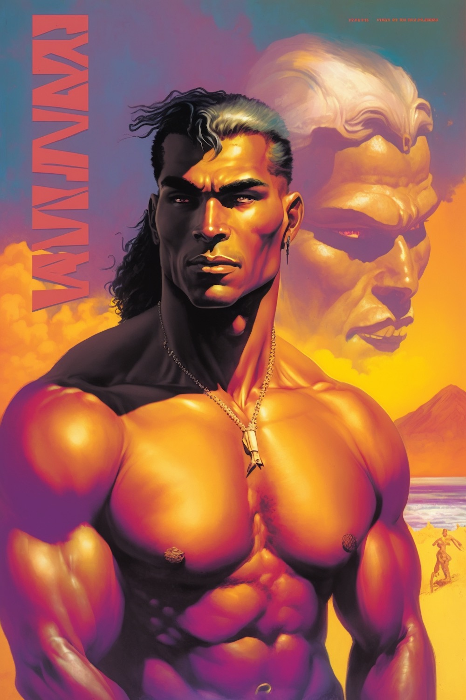
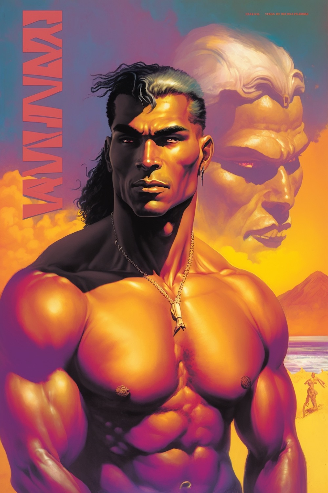
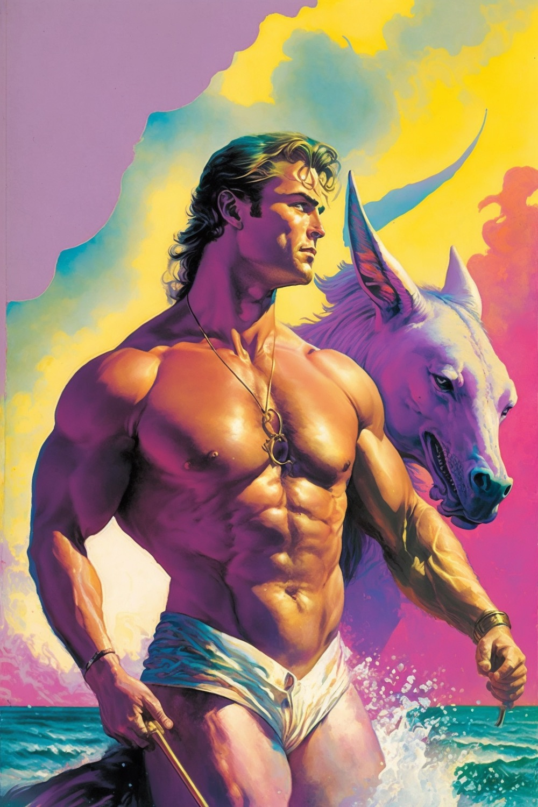
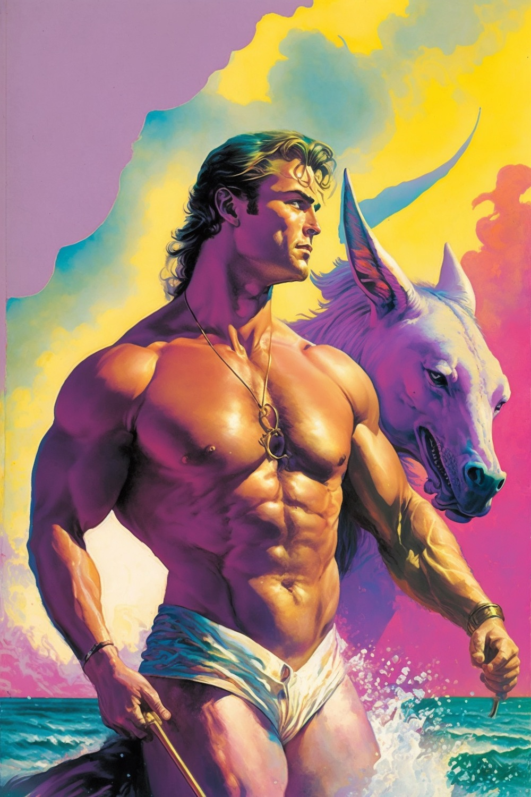

IN THIS ISSUE
Aku Ammah-Tagoe (inspired by Colin Winette's USERS)
Tiny Death Threats
ig @akuat
My friend Colin Winette published a novel, USERS, and asked friends to create art in response. I picked up on the novel's themes of interpersonal connection and disconnction, particularly through language. I was also fascinated by the small, succinct death threats the protagonist keeps getting in the mail, and the emotions they tap into. For Colin's book launch, I created envelopes and collage supplies and everyone was instructed to create a real death threat directed towards an actual person they feel anger or hate towards. Then we randomly, anonymously exhanged them. In the video, I explain the ideas behind the project and we read out some of the threats. In addition to Colin, I was fortunate to have contributions from paper artist Reina Takahashi and writers Kathryn Cai and Shane Zackery.
Pitchfork Review Generator
Paper Idol / Matan KG
ig @itspaperidol · tk @itspaperidol · tw @itspaperidol
The pitchfork review generator generates a pitchfork review about anything (yes, anything) in all its pretentious glory. Note that all reviews are critical. Don’t take it personally.
It isn't homesickness
Katie Novotny
ig @kathnovotny · tk @kathnovotny · tw @KathNovotny
There should be a different word for homesickness. A word to describe the longing for what once was. A snapshot in time that is forever framed in your mind as perfection. A moment cloaked in comfort, with highlights of smiles belonging to faces that know your favorite seat at the table. Maybe the moment lasted for just a moment – But maybe it lasted for weeks, months, and for the lucky few, years. The days that become routine and the nights that became expected. At the time you named it predictable, but looking back you know you you got it wrong. Because what is predictable without familiarity? A deep understanding of wants and needs laughs and favorite foods and the same four card games and Sunday night traditions. Of love. It is not homesickness, nor sadness, nor melancholy. Because what was once is no longer. New moments are forming faster than you can see them. The day begins with not a moment to spare. the expectation of what night holds shifts underneath. Life. Time. Change. Boundaries. Space. Growth. Age. Leaving the space between what we loved and what we will find only for us to find out. No, there is no word for this. At least not that I know of. I refuse to Google it.
Spinal Comb
Onkos
bc Onkos "Vascular Labyrinth" · ig @onkosonkosonkos (Bob)
Oh how fair stifled air, The generous dust beneath his head Sing to me, Muse, of the spine, that wondrous ladder of bone The thin vine inside us; running through Gather us, broken masts now. The thin teeth separate us. alien fingers stabbing in, separate all. revealing the world, revealing the world beautiful and ferocious, halfway through the Door of Peace So chaotic and serene. The thin vine inside us, unkempt strands, Gather us, raw and unvarnished. grasping at angles and whispers. Now I breathe a prayer to detach
For Crystal
Danny Meyer
ig @xasopheno · weresocool.org
I wrote this piece in a programming language I've been writing for composing microtonal music geometrically called WereSoCool. The animation was made using a framework I'm building for generating videos using stable diffusion models. This piece was writting for Crystal Pascucci-Clifford. She'll play cello on this piece and then I think it will be done.
Content Warning! Microtonal Music! Buyer beware! No Refunds! Also, it's a little flashy, so probably don't watch if you're super senstitive. Also, the Onkos piece is amazing. You could always just watch that instead.
For Bob and Mark (With Bob and Mark)
Mark Pascucci-Clifford (With Robert Woods-Ladue and on account of the music of Danny Meyer)
bc Dirty Snacks Ensemble · ig @xasopheno (Danny) · ig @mouscula (Mark) · ig @onkosonkosonkos (Bob)
Danny Meyer created this track initially using his mircotonal programming language, WereSoCool [ed: see above], and had Bob and I add to it as we saw fit. Here is where it currently stands with added drums, vibes, and gong.
Content Warning! I recorded the vibes over a stereo master track using mismatched overhead mics, so the mix is supremely sub-optimal. But, to quote David Berman, in the end we must be who we are.
AI Beefcake
Devin
website · ig @devinsmithwork
your scienctists were so preoccupied with whether or not they could, they didn't stop to think if they should
 

 



Thank you for visiting QUANTITY MAGAZINE!
This thing is run by Molly Bolten and Devin Smith -- and introducing... Mark Pascucci-Clifford!!!
If you would like to contribute, email us!!